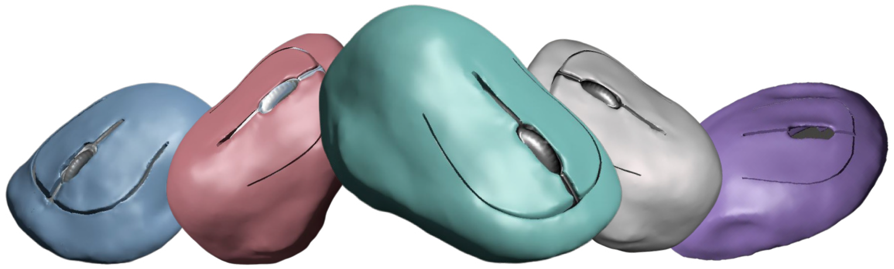

the future is customiced.
your hands are unique -- why isn't your mouse? Customiced is a mouse created by you for you. unlike traditional mice, Customiced fits your hand's size, shape, grip preference, comfort, and style.